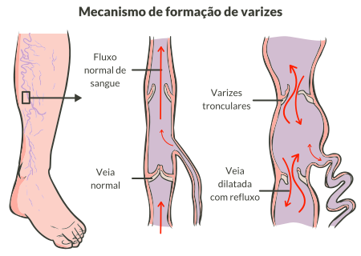

Com o passar do tempo, suas paredes ficam enfraquecidas e sujeitas ao rompimento. O surgimento das varizes e da insuficiência venosa tem relação com fatores genéticos e familiares e com a insuficiência valvular.
